第12天：中间代码生成之表达式
第12天：中间代码生成之表达式
终于来到了中间代码生成环节。前面我们说过，符号表管理、语义分析和中间代码生成是纠缠在一起的三兄弟，所以本文还会看到他们三个难解难分的戏码。
有人问，为什么要生成中间代码呢？直接生成某个平台的机器码不好吗？我理解你这种“一步到位”的急切盼望，但是，我们不能一步到位。
现代编译器通常采用“前后端分离”的设计架构，这极大地提升了其灵活性和可移植性。简单来说，前端负责“理解”源代码，将其转化为一种中间表示；后端则负责“翻译”，将这种中间表示优化并转换为目标机器代码。
如果你追求一步到位，那就损失了灵活性和可移植性。比如现在我们直接生成 x86 平台的机器码，可是过几天想换成 ARM 平台，怎么办？那就要大修大改，甚至推倒重来。所以我们先生成中间代码，再把中间代码转换成目标机器代码。如果想换个硬件平台，那就再为这个硬件平台开发一个后端，或者使用现成的后端。
举个例子，如果要支持 M 种语言运行在 N 种机器上，需要编写 M * N 个完整的编译器；而如果利用中间代码，只需要 M 个前端 + N 个后端，大大降低了工作量和难度。
中间代码是一种通俗的说法，在编译原理中称为中间表示（Intermediate Representation，简称 IR）。
中间表示的形式有很多，其中两种最重要的中间表示形式是：
- 树形结构，包括语法分析树和抽象语法树
- 线性表示形式，特别是“三地址代码”
语法分析树和抽象语法树的区别在于前者严格遵循文法规则，完整记录语法推导过程的所有细节（包括终结符和非终结符）；后者仅保留对编译有实际意义的语法结构（如表达式、语句、声明等）。
源码：
1 | |
把这两行代码翻译成语法分析树和抽象语法树，如下图：
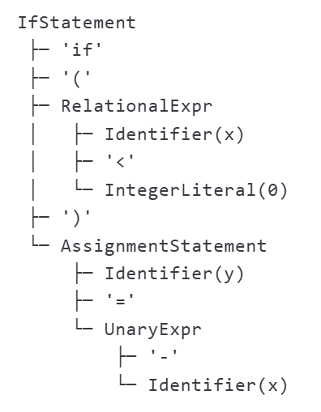
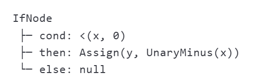
可以看到，抽象语法树包含的元素比语法分析树少了很多，可以认为抽象语法树是对语法分析树的简化。语法分析树完全依赖文法规则，而抽象语法树可以跨文法复用（例如不同语言的类似结构可能生成相同的 AST）。
三地址代码（Three-Address Code, TAC）
csub 使用的中间表示是三地址代码。
三地址代码（或者叫三地址码）得名于其指令格式——每条指令最多包含三个地址（即两个操作数和一个结果）。它的核心特点是结构简单、接近机器指令，是编译器优化和代码生成的关键桥梁。
三地址码有如下特征：
- 以指令为单位
- 每条指令只有有限数量的运算分量 (通常≤3)
- 支持基本数据类型及其运算
- 支持复合数据类型 (如数组、结构体) 及其操作
- 支持函数
运算分量指：
- 变量：源程序中变量
- 常量：源程序中出现或生成的常量
- 编译器生成的临时变量 (可与源程序变量等同视之)
三地址码的指令格式统一为：
1 | |
operand1和 operand2 代表操作数，op 代表运算符，result 代表计算结果。
不过有时候也用不了这么多，比如仅有 op 和一个运算分量；甚至仅有 op;
举2个从源码到三地址代码的例子：
源码：
a = (b + c) * (d - e) + 4
三地址代码如下：
1 | |
再比如
1 | |
三地址代码如下：1
2
3
4
5
6
7
8if x > 0 goto L1
goto L2
L1:
y = x
goto L3
L2:
y = -x
L3:
注意：在三地址码中，一条指令的右侧最多有一个运算符，也就是说不能出现组合的算术表达式。因此，像x + y * z这样的源语言表达式要被翻译成如下的三地址指令序列：
1 | |
这里的 t1 和 t2 是编译器产生的临时变量。
三地址码是抽象的概念，具体到代码实现该怎么做呢？这就要了解“四元式”了。
一个四元式有 4 个字段，分别是 op、arg1、 arg2、result；这四个字段分别和三地址码的 op、operand1、operand2、result 对应。
字段 op 包含一个运算符的内部编码（例如枚举类型）。
举例来说，如果有一个三地址指令是 x = y + z；那么对应的四元式为：
op 字段存放“+”，arg1 中存放 y，arg2 中存放 z，result 中存放 x
需要注意，对于像 x = y 这样的赋值语句， op 是 “=”，而对大部分其他双目运算符而言，赋值运算符是隐含表示的。
下面列出 csub 用到的所有四元式（一共 33 个）。
| op | result | arg1 | arg2 | 说明 | ||
|---|---|---|---|---|---|---|
| IR_OP_LABEL | label | 定义标签 label | ||||
| IR_OP_DECL | x | 声明变量 x | ||||
| IR_OP_FUN_ENTRY | fun | 标记函数 fun 的入口 | ||||
| IR_OP_FUN_EXIT | fun | 标记函数 fun 的出口 | ||||
| IR_OP_ASSIGN | res | x | res = x; 赋值语句 | |||
| IR_OP_ADD,IR_OP_SUB, IR_OP_MUL,IR_OP_DIV, IR_OP_MOD |
res | x | y | res = x + y res = x - y res = x * y res = x / y res = x % y |
||
| IR_OP_NEG | res | x | res = -x | |||
| IR_OP_GT,IR_OP_GE, IR_OP_LT,IR_OP_LE IR_OP_EQU,IR_OP_NEQU |
res | x | y | res = (x > y) res = (x >= y) res = (x < y) res = (x <= y) res = (x == y) res = (x != y) |
||
| IR_OP_NOT | res | x | res = !x | |||
| IR_OP_AND,IR_OP_OR | res | x | y | res = x && y res = x \ |
\ | y |
| IR_OP_LEA | res | x | res = &x； 取地址运算 | |||
| IR_OP_STORE | res | x | *x = res(把 res 存储到内存地址 x) | |||
| IR_OP_LOAD | res | x | res = *x(从内存地址 x 加载数据到 res) | |||
| IR_OP_JMP | label | goto label; 无条件跳转 | ||||
| IR_OP_JMP_IF_TRUE | label | x | if(x) goto label; | |||
| IR_OP_JMP_IF_FALSE | label | x | if(!x) goto label; | |||
| IR_OP_JE | label | x | y | if(x == y) goto label; | ||
| IR_OP_JNE | label | x | y | if(x != y) goto label; | ||
| IR_OP_ARG | x | 传递参数 x | ||||
| IR_OP_PROC | fun | fun() | ||||
| IR_OP_CALL | res | fun | res = fun() | |||
| IR_OP_RET | return | |||||
| IR_OP_RET_VAL | x | return x |
如果某个格子是空白，说明不需要这个参数。
例如最后一行的 return x ； 仅仅用到了 op 和 arg1；第一行的定义标签，仅用到了 op 和 result
还需要说明，IR_OP_ASSIGN 、IR_OP_STORE 和 IR_OP_LOAD 这 3 个操作。
以 x86 汇编为例，请看下面的代码
1 | |
假设每条指令执行前，ebx = 0x1000， 0x1000 处存储的内容是 0x1234； eax = 0x2000, 0x2000 处存储的内容是 0x2222;
第 1 行， mov eax, ebx
意思是将寄存器 ebx 中的值直接复制给寄存器 eax;执行后， eax 的值是 0x1000
第 2 行，mov eax, [ebx]
意思是将 ebx 代表的内存地址处的内容复制到寄存器 eax; 执行后，eax 的值是 0x1234
第 3 行， mov [eax], ebx
意思是将 ebx 的值复制到寄存器 eax 代表的内存地址处; 执行后，eax 的值不变，仍然是 0x2000,但是 0x2000 处存储的内容是 0x1000
inter_inst_t
为了描述四元式，我们需要定义一个结构体。
1 | |
上面就是根据四元式的字段设计的结构体，不过还需要再完善一下。
首先，如果这个指令是标签的话，需要存储标签的名字，所以增加一个字段 char label[GEN_NAME_MAX_LEN];
其次，arg1 字段可以表示变量，也可能表示函数（例如标记函数 fun 的出入口、表示函数调用），因为 arg1 字段已经设计成 var_t 类型了，所以不得不为函数再开一个字段 `fun_t fun;`
再次，对于 goto 指令，应该保存跳转的目标地址，所以再加上 struct inter_inst *jmp_target;
最后，函数代码被翻译成中间代码序列，为了把中间代码按照顺序存储起来，可以用链表这种结构，所以加上 struct list_head entry;
还有，我们给每条指令一个唯一的编号，就是第 11 行的 inst_id，这是为了后面看效果的时候叙述方便。
这样，结构体就变为下面的样子：
1 | |
四元式结构体有了，接下来考虑创建四元式的代码。
根据上面的表格，四元式大概可以划分为这么几类：
- 表达式，例如
res = x && y、res = !x - 函数调用，例如
fun()、res = fun() - 参数传递
- 函数出口入口标记
- 创建标签
- 无条件跳转和带条件跳转
这节课我们学习前 3 种。
new_general_inst
new_general_inst 函数用来构造单目运算表达式或者双目运算表达式。
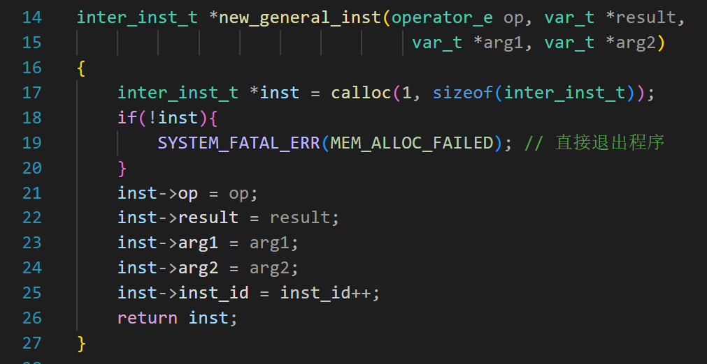
第 17 行分配内存，第 21~24 填写各个字段。
第 25 行，给指令分配编号，inst_id 是一个 int 类型的全局变量，从 0 开始递增。
new_fun_inst
new_fun_inst 函数用来构造和函数有关的指令。 op 可以是下面四种操作：
IR_OP_PROC
IR_OP_CALL
IR_OP_FUN_ENTRY
IR_OP_FUN_EXIT
除了 IR_OP_CALL，其他三个都用不到 result 这个参数。
IR_OP_CALL 和 IR_OP_PROC 的区别是前者有返回值（用 result 这个字段记录返回值），后者没有返回值（相当于这个函数的返回类型是 void）
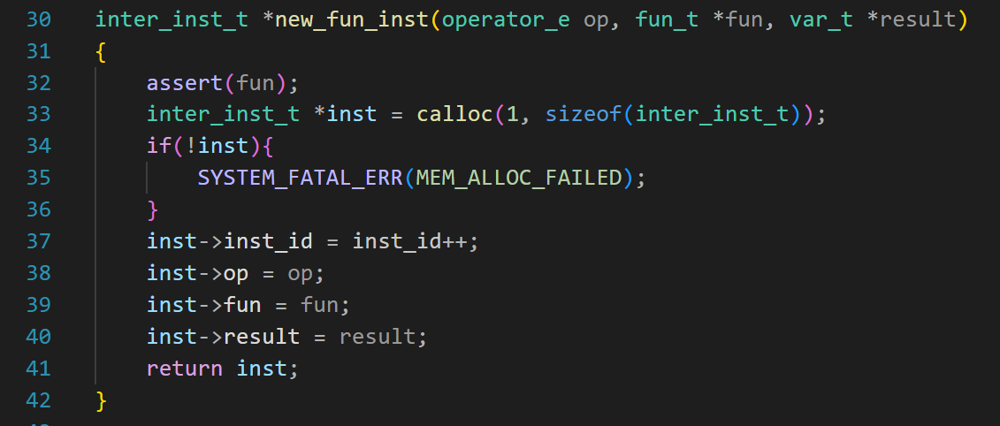
new_push_arg_inst
new_push_arg_inst 函数用来构造参数传递指令。
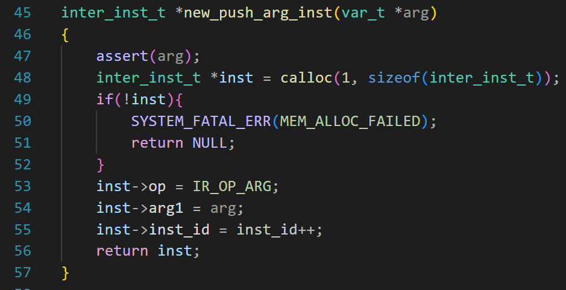
例如下面的源码：
1 | |
转换为三地址代码就是：
1 | |
add_inst
还记得 fun_body 函数吗？
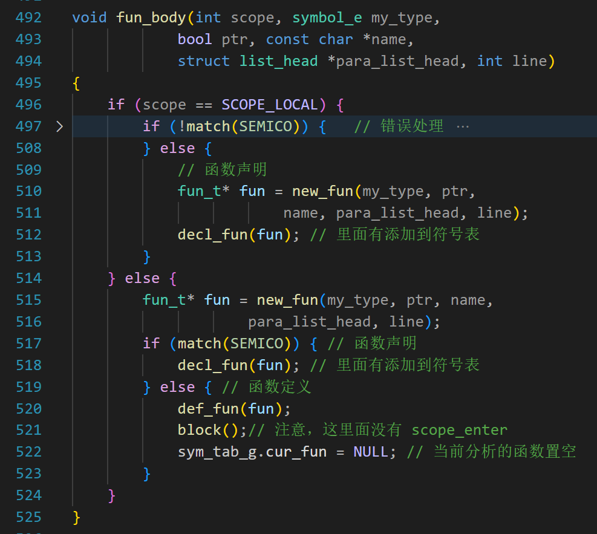
第 520 行，发现了函数定义，调用 def_fun(),def_fun 函数的最后，有
sym_tab_g.cur_fun = fun;
也就是说 sym_tab_g.cur_fun 指向当前分析的函数。
当函数分析结束，执行第 522 行，又让 sym_tab_g.cur_fun 指向 NULL；
所以，编译器当前分析的是什么函数，还是说当前没有分析函数（例如在分析全局变量），我们看 sym_tab_g.cur_fun 的值就可以了。
在分析函数的时候，会生成若干条中间指令（由前面介绍的 new_general_inst 等函数创建），我们需要把这些指令保存起来。
在 fun_t 结构体里面，增加了 struct list_head inter_code; 就是下面的第 33 行，表示中间代码链表的头节点。
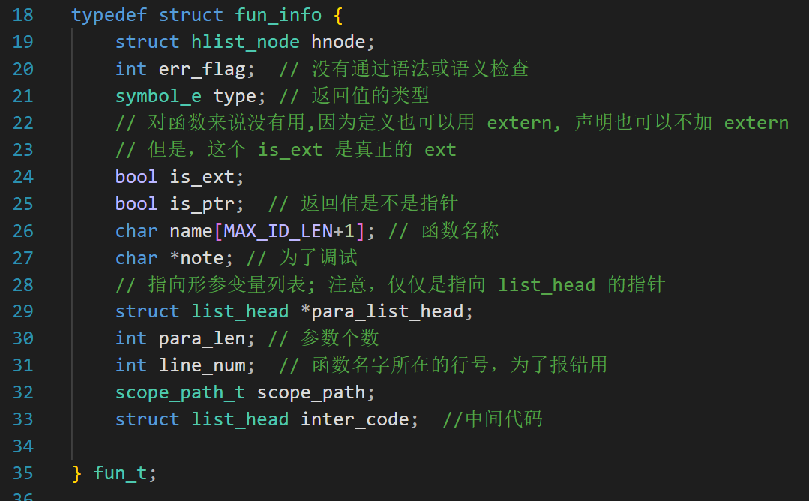
下面看 add_inst 函数。此函数的功能是：如果当前在分析某个函数，就把指令添加到这个函数的指令序列中。如果没有分析函数，则释放这条指令占用的内存。
1 | |
有的读者会对第 4 行的注释“全局作用域不需要指令”表示不理解，没有关系，到了后面自然会明白。
讲代码之前的热身
现在我们从一个场景切入，开始代码的讲解。
1 | |
对于第 3 行“&b”的解析，入口在 var_init 函数里面。
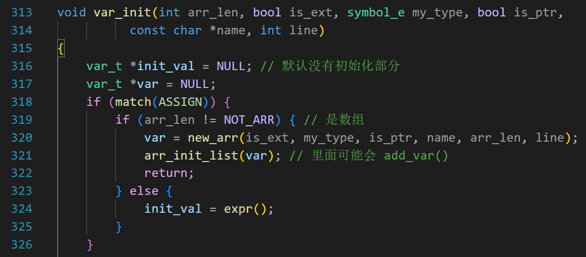
第 324 行，调用 expr() 解析 “&b”
expr() 函数的调用链如下：
1 | |
unary_expr() 代码如下：
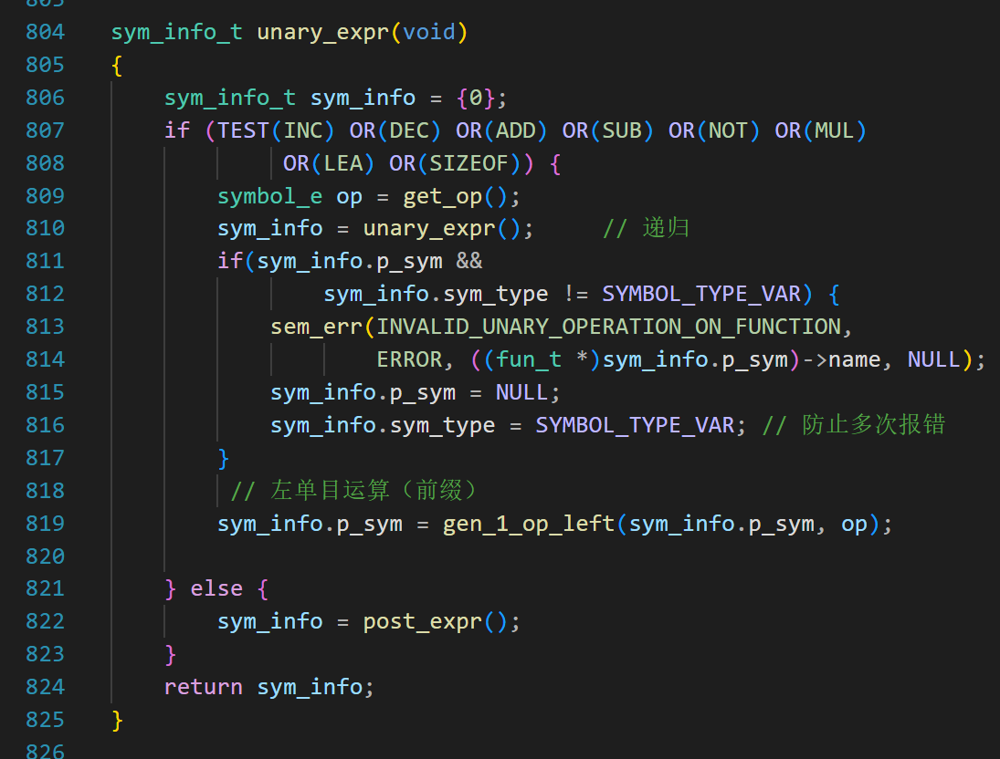
因为匹配到了 “&”，所以第 807 条件成立，第 810 行，递归调用 unary_expr()，当再次进入 unary_expr()，执行第 822 行，解析后缀表达式，post_expr()的代码就不贴了，只需要明白里面查询了符号表，查到了 b 这个变量，然后执行第 824 行，unary_expr() 返回。
这时候应该执行第 811~812 行，因为 sym_info.sym_type 等于 SYMBOL_TYPE_VAR，所以条件不成立，执行第 819 行的 gen_1_op_left 函数。
gen_1_op_left 的作用是生成一元运算表达式的中间代码。
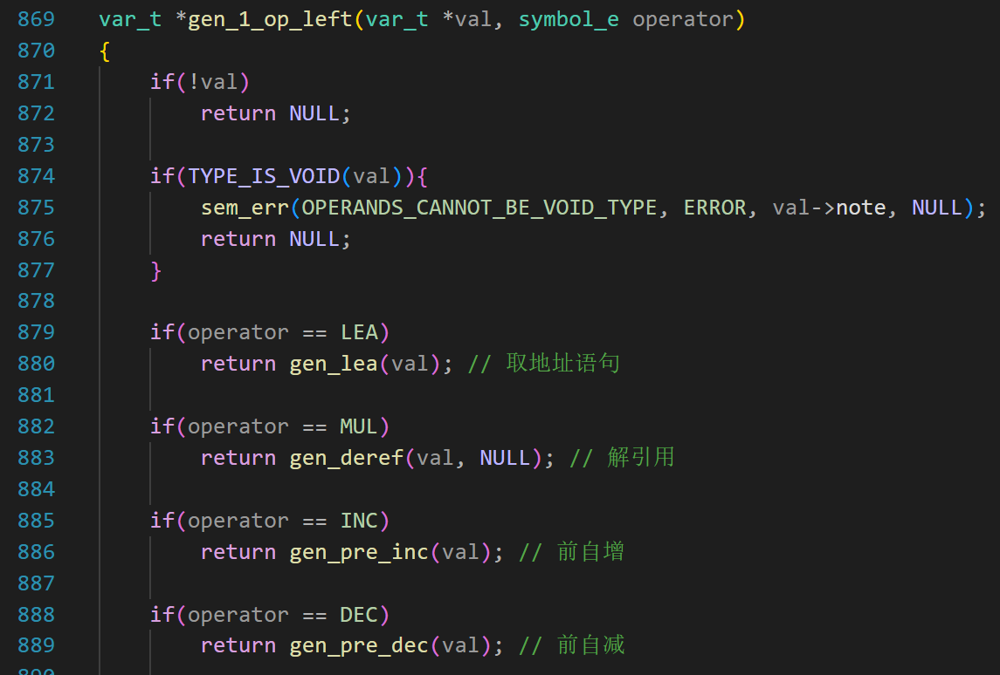
第 874 行做类型检查，由此可见，生成中间代码的过程中也可能做语义分析。
剩下就是根据传入的参数 operator 判断是什么操作符，分别调用对应的函数。
这些函数我们在后文都会讲。
gen_lea
现在请看第 880 行的 gen_lea，这是生成取地址的中间代码。
先复习一下 C 语言：&a 属于地址表达式，操作数 a 应该为左值。&a 的结果是 a 的地址，但不是左值。如果 a 的类型是 T，那么&a 的结果类型是“指向T的指针”
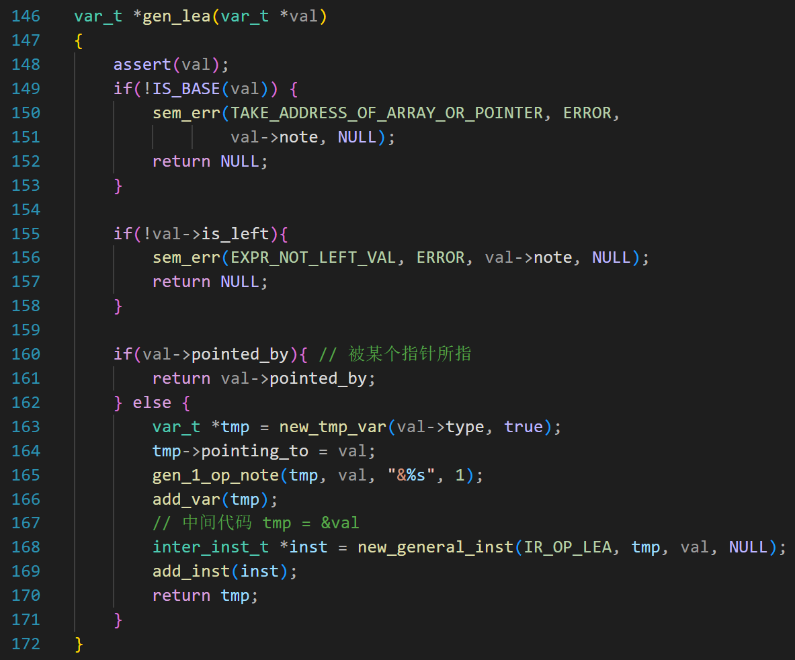
第 149 行判断参数 val 是不是基本类型，为了简化语法，csub 仅支持给 char 和 int 类型的变量取地址，如果是其他类型要报错。
第 155 行，判断 val 是不是左值，是才可以取地址。例如 int a = 100;你可以给 a 取地址，但是不能给 100 取地址。
第 160 ~ 162 先不管，这个需要讲完解引用后才能理解。
163 开始的代码是重点。第 163 行，创建一个临时变量，因为要用它来保存结果。 new_tmp_var 函数后面说，这里仅需要知道 tmp->is_ptr 是真（说明是指针）。
第 168 行，生成中间代码： tmp = &val;
意思是 val 的地址保存在临时变量 tmp 中，换句话就是 tmp 指向 val
我给 var_t 类型里面增加了一个字段：
1 | |
注意第 12 行的 pointing_to
为了表示 tmp 指向 val，给 tmp 的 pointing_to 字段赋值为 val
回到刚才的代码
第 165 行是为了调试用的，先不管
第 166 行是必须的，要把这个临时变量加入符号表，其实不加也可以，但是 tmp 指针是一个局部变量，不保存的话就丢了，会造成内存泄漏。
所以还是加入符号表比较好，第一个作用是保证内存不会泄漏，第二个作用是方便调试，这个变量叫什么，作用域是什么，都可以去符号表中查。
第 168 行就是生成中间指令，因为指令形式是res = &x，所以用不到 arg2,最后一个参数赋值 NULL
第 169 行，把生成的指令加入函数的 inter_code 链表。
你注意，这是在文件作用域，此时符号表的 sym_tab_g.cur_fun 是 NULL，这条指令（ tmp = &val）生成后又被丢弃了。
问题来了，既然都丢弃了指令，那么如何给变量取地址呢？
请看第 170 行，虽然指令丢弃了，但是创建的这个变量还在，会把此变量的地址返回给 var_init 的第 324 行。
也就是说，tmp 的地址赋值给了 init_val;
然后 init_val 又赋值给了 var->init_val
这里剧透一下，对于全局变量的初始化，不是靠指令，而是靠构造数据段。
比如 int *pb = &b; 这句话如果是在函数里面，那么要靠 LEA 汇编指令
1 | |
假设 ebx 的值是 0x100，第 1 行的意思不是读取 0x100 地址处的内容，而是取 0x100 地址处的内容的地址，也就是把 0x100 赋值给 eax
但是，对于下面的代码
1 | |
因为是文件作用域，不在函数里面，即使生成了对变量 b 取地址的指令，也会丢弃。那如何获得 b 的地址呢？
事实上，对于全局变量，在生成汇编代码的时候，我们会构造数据段
1 | |
第 2 行的意思是变量 b 的初始值是 2；
第 5 行的意思是 pb 变量的初始值就是变量 b 的地址。你看，这和 lea 指令没有任何关系。
b 和 pb 这两个名字是怎么来的？是查变量表中的全局变量得到的。
它们的初始值是哪里来的？查找变量 b 的 init_val 字段得到常量2；
查找 pb 的 init_val 字段，得到的是前文分析 gen_lea 函数时提到的那个 tmp, 根据 tmp->pointing_to 得到 tmp 指向的变量,其实就是 b
所以，全局变量的初始化不靠指令，而是靠查符号表。
有点跑题了，我们再回到代码讲解上。
new_tmp_var
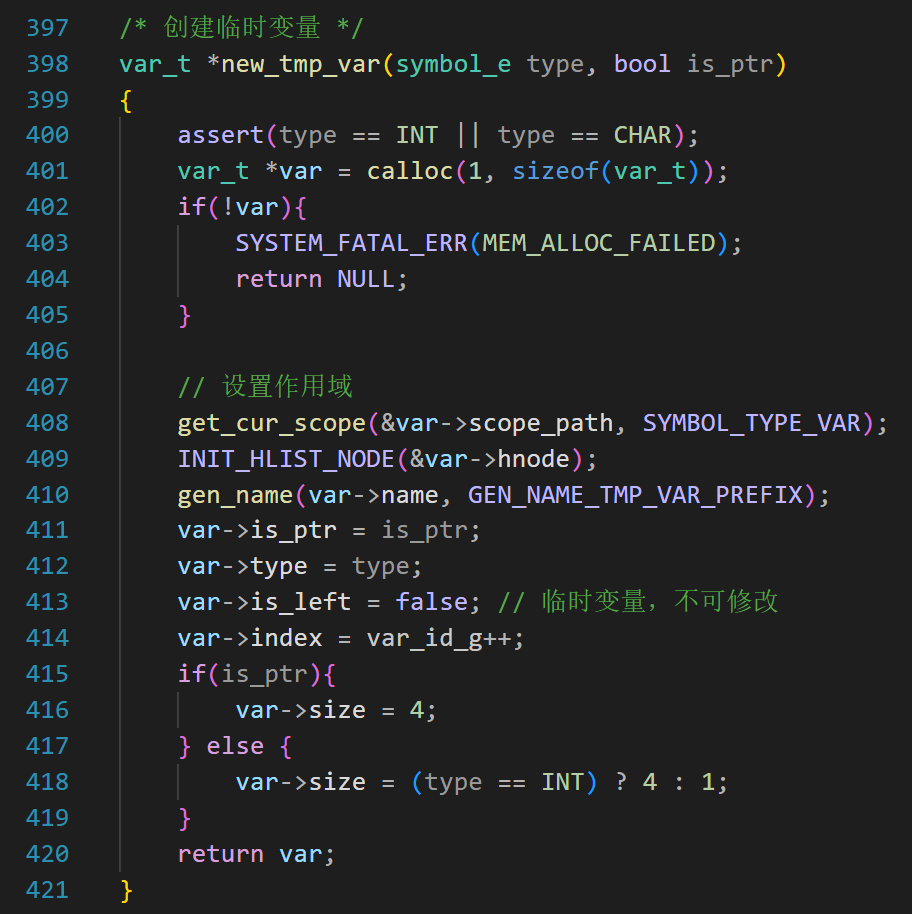
此函数用来创建临时变量。前文说了，在三地址码中，不能出现组合的算术表达式，所以要创建很多临时变量保存中间结果。
第一个参数是变量的类型，第二参数表示是不是指针。
第 408 行，获得临时变量的作用域。第 409 行，初始化哈希表节点，因为临时变量也要加入变量表。
第 410 行，为临时变量生成一个唯一的名字。
#define GEN_NAME_TMP_VAR_PREFIX ".t"
例如 “.t1”“.t2”
以“.” 开头是为了避免和用户定义的标识符冲突
第 413 行，临时变量默认不是左值。如果需要修改，可以在调用此函数后专门修改 is_left 字段，比如后面要讲的 gen_deref() 函数
有人问，临时变量的值是什么？这是一个好问题，后文会解答。
gen_deref
1 | |
第 5 行，等号右边的 *p 表示对 p 解引用。
解引用（Dereference） 是指通过指针访问或修改该指针所指向的内存地址中存储的数据。
注意，对于基本类型不能解引用。
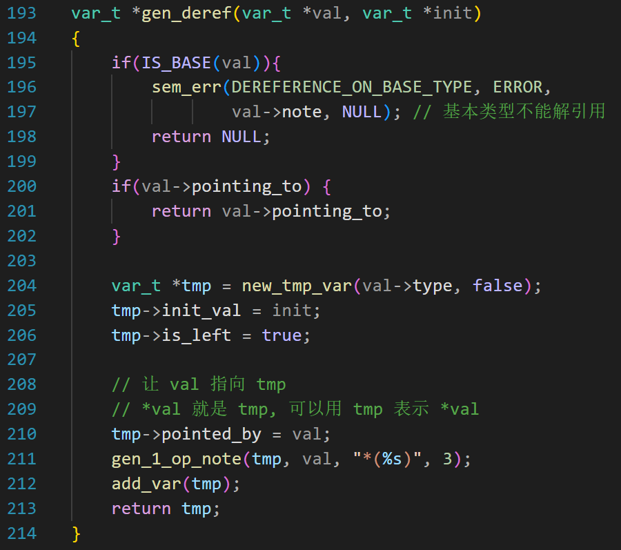
gen_deref 函数的作用是为解引用表达式生成中间代码。
首先，参数 val 肯定不是基本类型，应该是一个指针或者数组。
1 | |
第 1 行定义了数组 c，第 2行不是对数组 c 解引用，而是对指针 c 解引用(此时 c 自动转换为指向 int 类型的指针)
所以，如果参数是数组，也是可以的。
前文分析 gen_lea 函数时说过，如果 tmp 指向 val，就给 tmp 的 pointing_to 字段赋值为 val；
那么对 tmp 解引用，得到的就是变量 val,所以这种情况可以直接返回 tmp 的 pointing_to 字段。这就是代码 200 ~201 行的意思。
第 204 行，创建临时变量，临时变量的类型是 val->type, 因为不管是数组还是指针，val->type 记录指向的类型或者元素的类型；
我们仅支持一级指针，所以对指针解引用，得到的是基本类型，所以第二个参数是 false
第 205 行，先不管，这是为数组的初始化准备的，后面会讲。
第 206 行，解引用后得到的是左值。
第 210 行，非常关键， val 表示 val 指向的变量，如果 val 是 tmp,说明 val 指向 tmp,也就是 tmp 被 val 所指；
pointed_by 这个字段是我专门为解引用操作加的，是 struct var_info * 类型；
所以如果某个变量 var 的 pointed_by 不为空，说明它是某个变量的解引用，表达式可以写成 *p
p 是什么变量呢，那就看 var->pointed_by->name
有人说，好奇怪啊，这个解引用不生成什么指令吗？前面的取地址操作都有指令啊。
解引用确实不生成指令，对变量 p 解引用，仅仅是生成一个临时变量来表示 *p,意思是 p 指向的值或者地址 p 处的内容
我们再回头看 gen_lea 函数中的
1 | |
如果 val 被某个变量指向，那么对 val 取地址，得到的自然就是指向它的变量，所以返回 val->pointed_by；
__copy_var_outline
为什么会有这个奇怪的函数，名字前面还有2个下划线
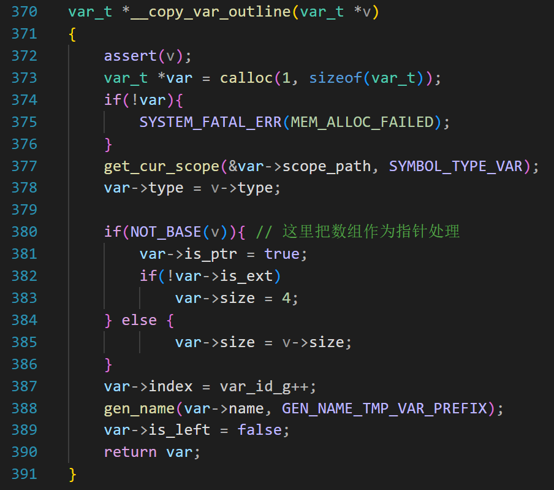
前面加 __ 是个人习惯，表明这是一个内部使用的函数。
此函数的作用是创建一个变量 v 的“模子”，准确讲，调用此函数后，得到的临时变量 var 仅仅拥有了 v 的类型；当 v 是基本类型时，var 的类型和 v 一样；如果 v 是数组或指针，则创建一个同类型的指针。
为什么当 v 是数组时要创建指针呢？
这是因为在 C 标准中，除去以下两种情况，数组的名字会自动转换为指向首个元素的指针（注意，不是左值）
1 | |
第 2 行，如果 sizeof 的操作数是数组名字，那么它就代表这个数组。
第 3 行，如果数组名字作为 & 运算符的操作数，那么它也代表数组。
除去这两种，其他情况数组名字都会自动转换为指向首个元素的指针。
第 4 行是错误的写法，确切说，数组转换为指针类型的值，而不是转换为一个指针类型的变量。
光创建变量 v 的“模子”还不够，还需要让这个变量有 v 的值，要形神兼备。
gen_copy_assign
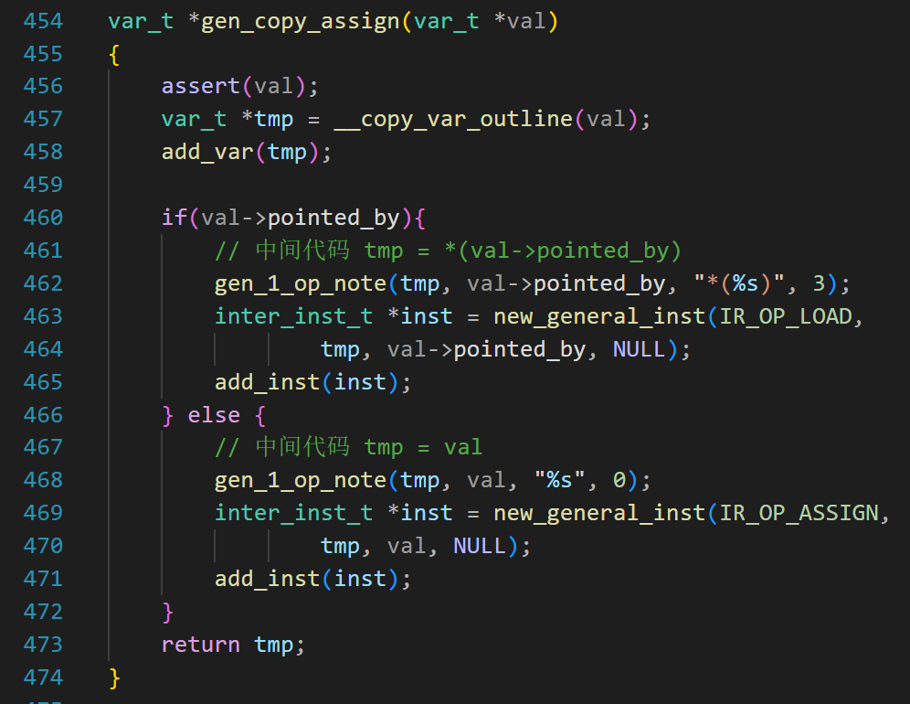
此函数的作用是创建变量 val 的副本，但是结果不是左值
第 457 行，调用 __copy_var_outline 函数，创建一个和 val 同样类型的变量 tmp（不是左值）。
先看第 469 行，生成赋值表达式“tmp = val”；这样，tmp 就拥有了和 val 同样的值。但是有个问题，如果 val 不是一个普通的变量（val->pointed_by 不是 NULL，第 460 行的条件成立），那么说明它被某个变量所指向，假设这个变量的名字是 p,
这种情况不能用 IR_OP_ASSIGN，而应该用 IR_OP_LOAD；原因如下：
想一想 val 这个变量是怎么来的？是作为表达式 p 的结果而被创建的，它存在的意义就是为了表示 p，你要是问 val 的值是什么，那就是问 p 的值是什么？要获得 p 的值，当然要用 IR_OP_LOAD，这样生成的中间指令是 tmp = *p;意思是 p 是一个地址，把 p 地址存储的内容赋值给 tmp，这就是我们想要的。如果用 IR_OP_ASSIGN，那么生成的中间指令是 tmp = p; 意思是把地址赋值给 tmp，显然不是我们想要的。
gen_copy_assign 函数说完了，肯定有读者问，为什么会有这个函数？什么场合用它？
注意:此函数之前的名字是 __gen_copy_assign
后来我发现这个函数在其他模块也可能用，就把前面的下划线去掉了。所以看到 __gen_copy_assign，其实就是上图的 gen_copy_assign
gen_pre_inc
这个函数用来生成前缀递增表达式的中间代码。
先复习一下 C 语言中的“++a”
- 这是一个前缀递增表达式
- a 必须是一个可以修改的左值
- ++a 的结果不是左值，它的值是 a 指示的对象在递增操作后的新值，即在数值上等于表达式 a+1 的值
- 这个表达式有副作用，即会修改 a 所指示的对象，将它的存储值变为表达式 a+1 的值
注意，这里说的对象和高级语言（C++, Java 等）里面的对象不是一个东西，也没有任何关系。
C 标准中的对象，是指存储器中的一个区域。
例如int a = 2; 这句代码声明了标识符 a;当程序运行的时候， a 代表的一个 int 类型对象在内存中被创建（假设占 4 个字节），换句话说， a 就和存储器中一个区域相关联。我们读写变量 a,其实就是读写这块内存。当写入对象 a 时,写入的内容应当是 int 类型的值；当读对象 a 时，读出的内容应当被解释为 int 类型的值。
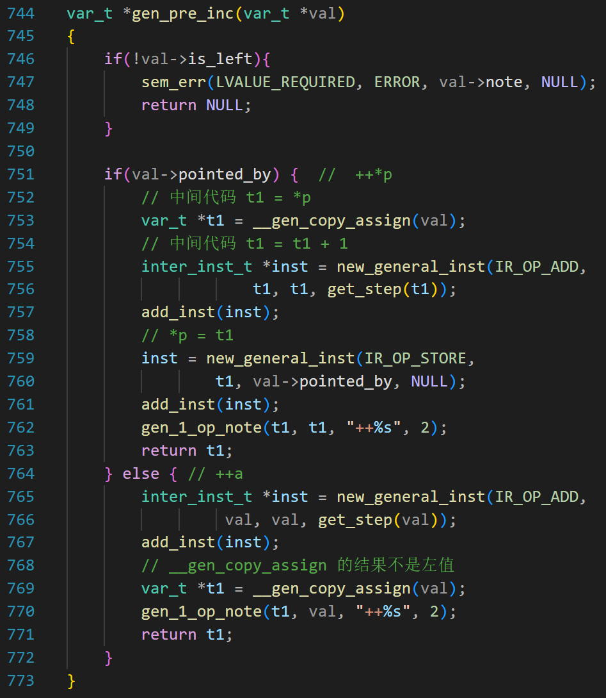
现在我们看代码。第 746 行，判断是不是左值，不是就报错。
再看第 765 行，生成中间指令， val = val + 1; get_step 先不管，后面会说。
因为 ++a 的结果不是左值，所以不能直接返回 val，需要创建一个副本，第 769 行，调用 gen_copy_assign 创建副本 t1，最后返回 t1；
如果是 ++*p 这种形式呢？
步骤如下：
- 求 p 的值，也就是生成中间指令 “t1 = p”（对应第 753 行）
- 计算 t1 = t1 + 1（第 755 行）
- 计算 *p = t1（第 759 行）
- 返回 t1（第 763 行）
第 4 个步骤，返回 t1 是因为 ++p 的结果不是左值，所以不能返回 p
所以，函数 gen_copy_assign 有 2 个作用，一个是创建变量副本（用 IR_OP_ASSIGN 操作符），另一个是求 p 的值（用 IR_OP_LOAD 操作，），也就是生成中间指令 “t1 = p”。
有读者说，前者好理解，因为要消除左值属性，所以创建一个不是左值的副本。但是后者是什么意思，为什么一定要生成中间指令 t1 = *p ？
其实这个问题非常好回答，如果去掉上面的第 1 个步骤，那就是求 t1 = p + 1，前文说一条指令的右侧最多有一个运算符，可是 t1 = p + 1 不符合这个规则，右边有加法和解引用两种操作。所以，遇到 *p，一般都会调用 gen_copy_assign 函数做解引用。
有了前面的铺垫，下面我们看 gen_post_inc
gen_post_inc
先复习一下 C 语言中的“a++”
- 这是一个后缀递增表达式
- a 必须是一个可以修改的左值
- a++ 的结果不是左值，而是 a 指示的对象在递增操作之前的原值，而不是递增后的新值
- 这个表达式有副作用，即会修改 a 所指示的对象，将它的存储值变为表达式 a+1 的值
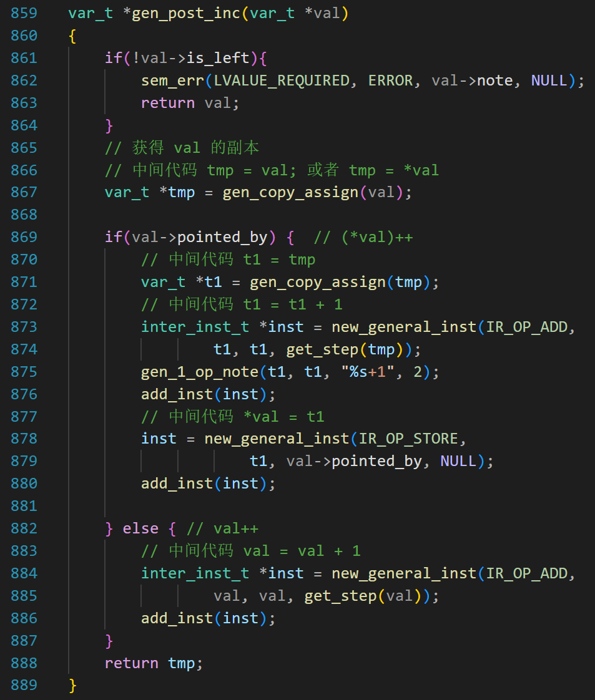
因为 a++ 的结果不是左值，而是 a 指示的对象在递增操作之前的原值
所以第 867 行，先获得 val 的副本 tmp, 或者做解引用操作 tmp = *val，最后返回的也是这个 tmp。
先考虑 val 是一个普通的变量，第 842 行生成加法指令，让 val = val + 1
再考虑 val 是 p 的情况，因为 tmp 要作为返回值，所以它的值不能 + 1，我们再创建一个 tmp 的副本，也就是 871 行的 t1, 第 873 行让 t1 = t1 + 1;这个结果还要写回到 p，所以第 878 行用 store 操作把 t1 存储到 p 指向的内存： *p = t1;
第 874 行，有一个 get_step 函数，马上就讲。
get_step
1 | |
此函数用来获得变量 v 的步长。
为什么会有这个函数呢？
考虑 x86 32 位机器，请看下面的例子
1 | |
对于第 1 行的指针 p, 表达式增加 1， 在数值上 p 会增加 4；
对于第 3 行的指针 q, 表达式增加1， 在数值上 q 会增加 1；
如果传入变量 p, get_step 应该返回 4；
如果传入变量 q, get_step 应该返回 1；
所以，如果生成加法指令，应该写：
inter_inst_t *inst = new_general_inst(IR_OP_ADD, val, val, get_step(val));
最后一个参数不是 1，而是 get_step(val)；
符号表初始化的时候创建了几个特殊的变量
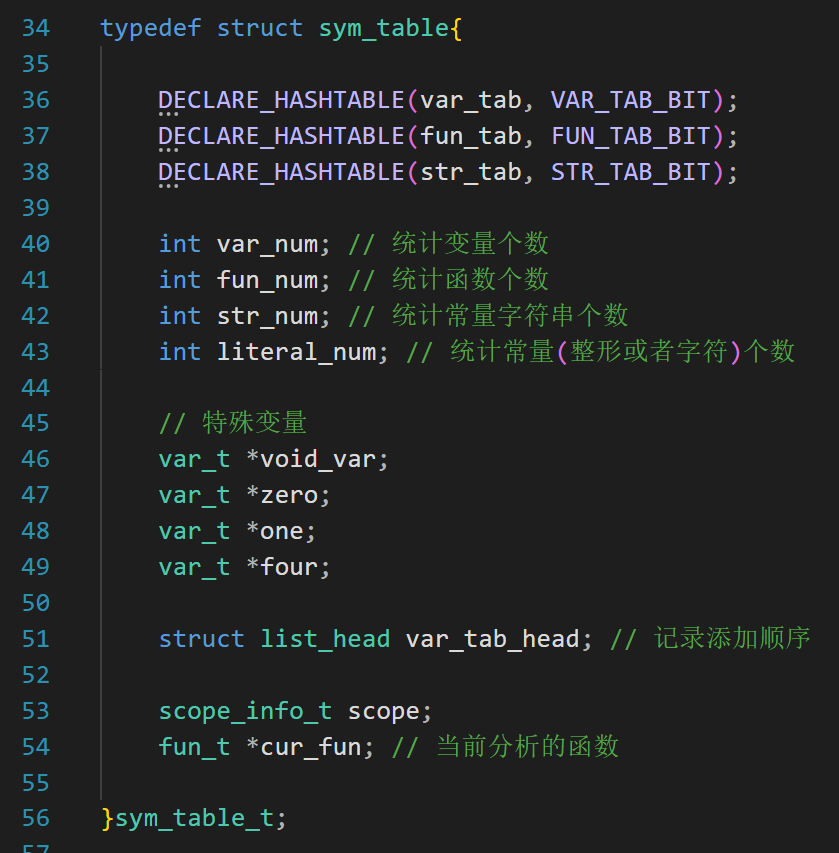
第 46 行表示 void 类型的特殊变量，47 ~ 49 表示常量 0、1、4
创建这些特殊变量的代码是
1 | |
为了方便，当中间代码中需要用常量 0、1、4 的时候，我们可以直接使用 sym_tab_g.zero、sym_tab_g.one、sym_tab_g.four
gen_mul
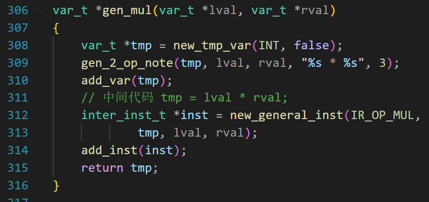
此函数的作用是生成乘法表达式的中间代码。
第 308 行，首先创建一个变量 tmp, 用来保存计算结果，第 310 行把 tmp 加入符号表，至于原因前文已经解释了。
第 312 行，生成乘法指令，第 314 行把指令加入对应的函数指令序列。
二元运算的其他代码类似，非常好理解，本文不再赘述。
gen_add
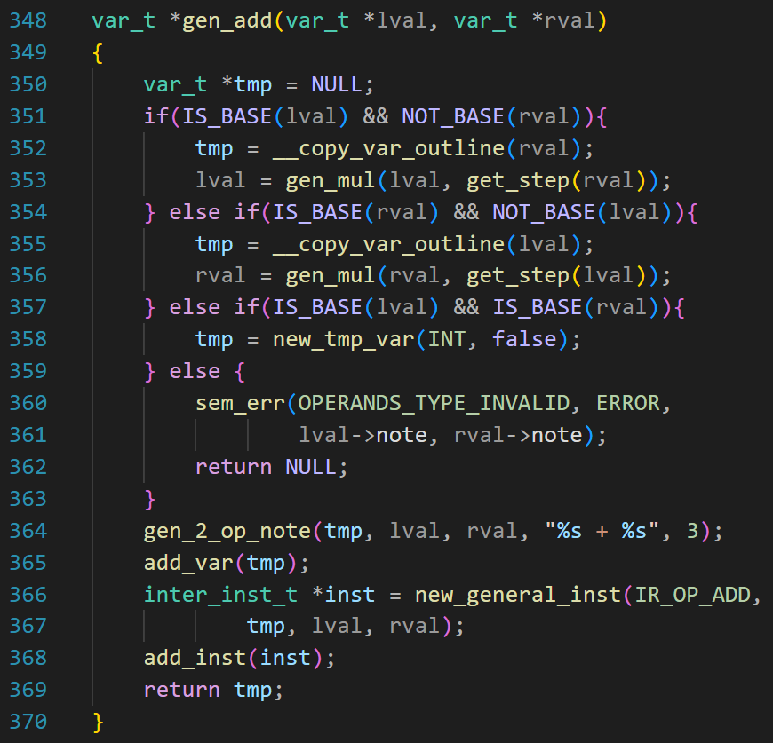
此函数的作用是生成加法表达式的中间代码。
因为牵扯到操作数是指针，所以要分情况讨论。
1 | |
首先，第 6 行，两个指针相加，非法。对应上面的 360 行，报错。
其次，两个基本类型相加，这个最简单，直接构造加法指令就行。对应 358 行，先生成一个中间变量，用来保存结果，然后执行第 366 行，生成加法指令。
比较麻烦的是其中一个是指针，一个是基本类型。这种情况要获得指针的步长，例如 p+3, p 的步常是 4，所以反映到中间指令上，不是给 p 的值增加 3， 而是 4*3 = 12；所以要先构造乘法表达式，例如第 353 行的
lval = gen_mul(lval, get_step(rval)); // 形如 3 + p
或者第 356 行的
rval = gen_mul(rval, get_step(lval)); // 形如 p + 3
假设指针变量的步长是 n，先把 lval 或 rval 扩大为原来的 n 倍， 再执行 366 行的 lval + rval
gen_sub
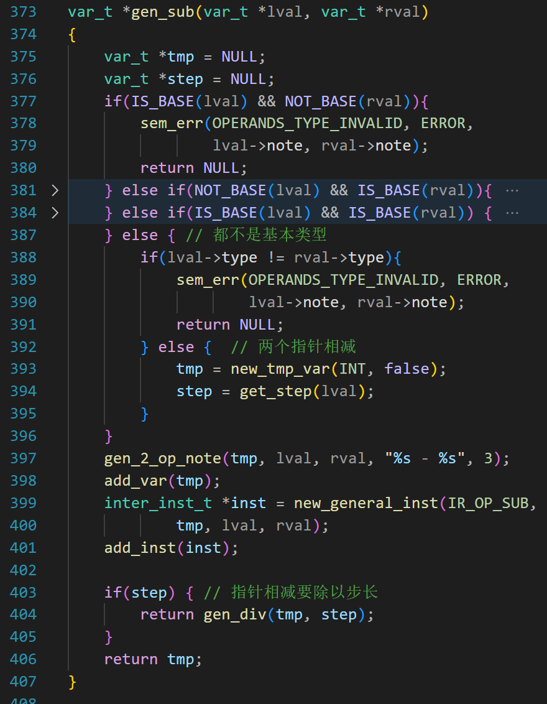
此函数的作用是生成减法表达式的中间代码。和加法是类似的，但是还有点不一样。
1 | |
第 5 行，非法，不存在这样的用法。所以有第 378 行的报错。
第 6 行，非法，两个指针可以相减，但是类型要一样，否则报错，对应上面的第 389 行
两个指针相减，也要考虑步长，例如在数值上 p = 0x2004, q = 0x2000
p - q 的结果不是 4， 而是 4/4 = 1
所以第 394 行获得步长，第 404 行生成除法指令。
gen_assign
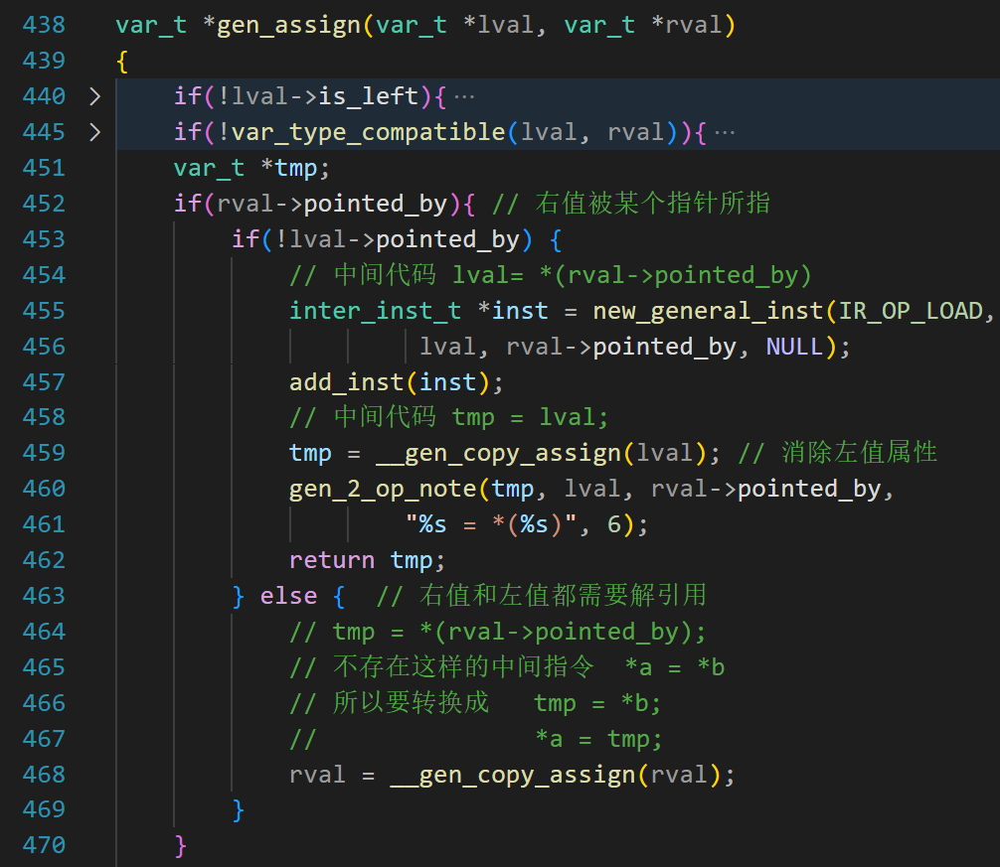
此函数用来生成赋值表达式的中间代码。错误处理部分已经折叠。
赋值也分为四种情况：
1 | |
如果是情况 3， a = *b 这种赋值，直接用 LOAD 操作构造中间指令就可以。对应代码 455~457
但是为什么会有 459 呢？
这是因为赋值表达式的结果不是左值
1 | |
所以，执行完 457 后，不能返回 lval ，要返回 lval 的副本
如果是情况 4， a = b 的情况，那么先执行 468，得到 tmp = *b;
注意，这个 tmp 是一个中间变量，是在 gen_copy_assign 函数里面创建的。它的地址作为返回值给了 rval 这个指针，
可能有的读者会误解第 468 行的意思，说给 rval 创建一个副本再赋值给 rval , 这不是多此一举吗？
不是这样的。 首先， rval 是一个指针，作为入口参数，指向赋值表达式的右值。
gen_copy_assign 函数中为这个右值创建了副本，这是一个新的临时变量，有自己的内存地址，并且返回了这个内存地址。
然后，rval 这个指针就指向了这个内存地址。
rval 仅仅是一个 var_t * 类型的局部变量，可以指向这个， 也可以指向那个， 所以要根据上下文理解代码，而不是简单认为 rval 总是指向表达式的右值。
所以，第 468行执行后， rval 就指向了 *b 的副本。
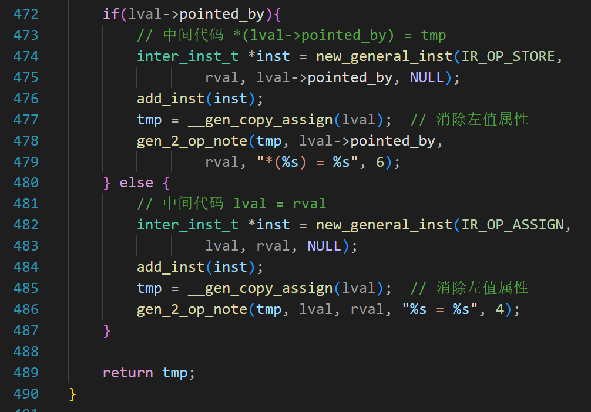
接下来，根据第 472 行的条件判断，
如果是真，就是情况 2 和情况 4；否则是情况 1
情况 1 最简单，直接生成赋值操作的代码。第 485 行，依然要消除左值属性。
情况 2 和情况 4 的处理方法是一致的，因为后者已经创建了 （*b） 的副本 tmp, 现在要做的就是用 LOAD 操作，把 tmp 或者 b(情况 2 )写入 a 指向的内存。
第 477 行，依然要消除左值属性。
gen_arr
此函数的作用是生成数组下标表达式的中间代码，例如 array[index]
因为 csub 仅支持一维数组，所以比较简单。
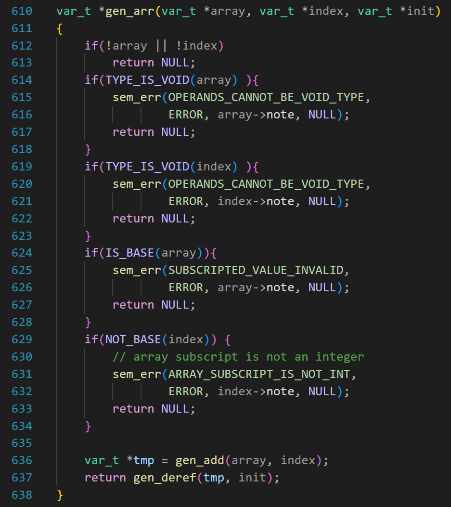
arr[x] 等价于 *(arr + x)
参数 array 应该是数组或者指针类型（否则第 625 行报错）。参数 index 应该是基本类型（否则第 631 行报错）。
第三个参数 init 先不管。
因为 array[index] 等价于 *(array + index)
第 636 行求 tmp = array + index
第 637 行求 *tmp
ABI
ABI（Application Binary Interface，应用程序二进制接口）是程序编译成二进制机器码后，在运行时需要遵守的一套底层规则和约定。它定义了编译后的二进制程序如何与操作系统、库函数以及其他二进制程序模块进行交互。
一份完整的 ABI 覆盖很多内容，包括但不限于调用约定、可执行文件格式、符号修饰、基本类型大小与对齐、寄存器用途分类、栈帧布局等等。
为什么需要 ABI 呢？理由有很多，对于我们学习编译原理来说，有一条最重要的理由：让不同编译器生成的 .o 文件能链接到一起（或者说编译后的二进制代码可以互相交互）。
常见 ABI 标准
| ABI 标准/家族 | 主要应用平台/架构 | 核心特点与说明 |
|---|---|---|
| System V ABI | 类 Unix 系统（Linux, macOS, BSD）的 x86-64 和 i386 架构 | 类 Unix 世界的基石，详细规定函数参数传递（如 x86-64 下用 RDI, RSI, RDX, RCX, R8, R9）、栈帧布局、数据对齐等 |
| Microsoft ABI | Windows 平台 | Windows 生态的王者，64位时代统一为 Microsoft x64 Calling Convention（参数优先用 RCX, RDX, R8, R9 传递），与 System V ABI 不兼容 |
| ARM ABI (AAPCS) | ARM 架构（如移动设备、嵌入式系统） | 包括 AAPCS（ARM 架构过程调用标准），规定参数通过寄存器（如 r0-r3）传递、栈使用规则等。Android 系统就基于此 。常见变体有 armeabi-v7a（32位）和 arm64-v8a（64位） |
我们这节课只需要了解调用约定。
1972 年前后，Dennis Ritchie 在 PDP-11 上写 C 编译器时，机器寄存器很少（8 个通用寄存器），参数传递是用最朴素的办法：
1 | |
- 参数从右向左压，这样第一个参数在栈顶，printf 这种可变长参数函数就能顺着栈顶依次解析。
- 调用者清理栈，因为调用者最清楚到底传了几个字节（尤其是变参函数）。
- 函数返回时不用管栈，代码量最小。
这套做法在当时“足够好”，Unix 内核、 utilities 全部用它，源代码、目标文件、汇编接口自然形成事实标准。
后来人们才给这种“原始”做法起了个名字——cdecl，并把它固定成一种约定，以便不同编译器生成的目标文件能互相链接。
链接器层面的需求——“得给这种惯例起个名字”
70 年代末，Unix 开始移植到 VAX、68000，商用编译器（Lattice、Microsoft、Borland）也冒了出来。
不同编译器如果压栈顺序、清栈责任不一致，目标文件就无法静态链接。
于是各种“调用约定”被命名、标签化：
1 | |
其中 cdecl 被 Microsoft、Borland、GCC 一致保留，唯一目的是“继续把老 C 代码链进来”。
- 所有 Unix-like 系统的 ABI 默认就是 cdecl（System V AMD64 把它细化成“rdi, rsi, rdx, rcx, r8, r9 寄存器 + 栈”的扩展版，但仍兼容可变参部分）。
- 任何用到
printf/scanf/open/...的代码，只要参数列表可变，就必须走“调用者清栈”这一支，否则栈高度算不准。 - 因此 GCC/Clang/MSVC 在 x86 32-bit 模式下都继续提供
__attribute__((cdecl))/__cdecl，保证旧目标文件还能链接。
在 32位 x86 架构下，GCC 编译的 C 语言代码默认遵循 cdecl调用规则（C Declaration），比如 GCC 的 string.h标准库函数（如 strcpy, memcpy, strlen等）默认遵循 cdecl调用规则。
为了能调用 gcc 标准库，我们也要遵循 C Declaration
cdecl定义了一整套从参数传递到寄存器管理的完整约定。以下是其核心规则：
| 约定类别 | 具体规则 | 说明与示例 |
|---|---|---|
| 参数传递顺序 | 从右到左依次压入栈中 | foo(a, b, c)的压栈顺序：c, b, a |
| 栈清理责任 | 调用者负责清理栈空间 | 在 call指令后使用 add esp, n |
| 返回值存放 | eax（32位），edx:eax（64位） |
int等 32 位值通过 eax返回 |
| 寄存器保存规则 | 调用者保存：eax, ecx, edx 被调者保存：ebx, esi, edi, ebp, esp |
调用前需保存易失寄存器 |
| 栈帧结构 | 使用 ebp作为栈帧指针 |
通过 [ebp+8]访问第一个参数 |
| 可变参数支持 | 原生支持，如 printf |
因调用者清理栈，可接受不定数量参数 |
假设调用了 foo(a, b, c)
栈布局如下：
1 | |
这节课我们只需要掌握函数参数传递的顺序是从右到左依次压入栈中就可以了。
函数调用
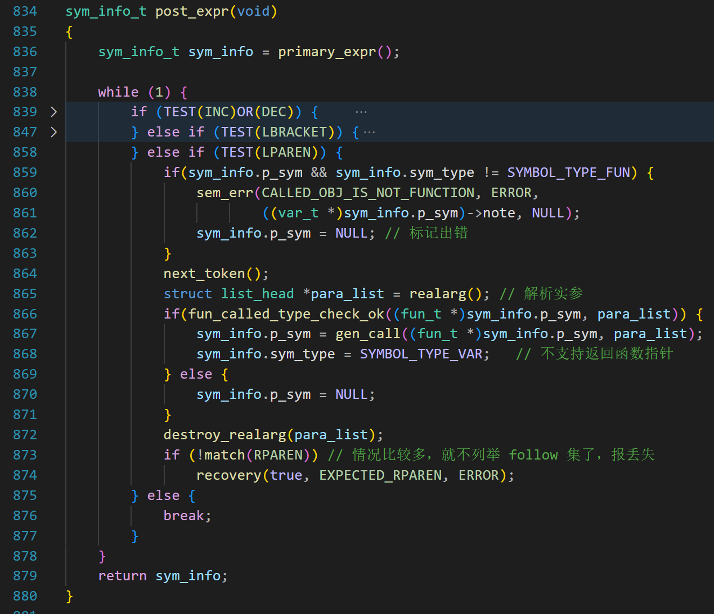
上面是解析后缀表达式的代码。和之前的代码很不一样了，先看第 836 行，基本表达式的返回值是 sym_info_t 类型
为什么要有这个类型呢？这是因为 primary_expr 函数需要查符号表，查到的符号可能是函数，也可能是变量，所以我设计了这个结构体，它有 2 个字段，
1 | |
p_sym 指向函数符号或者变量符号；sym_type 的取值是 SYMBOL_TYPE_VAR 或者 SYMBOL_TYPE_FUN；
用结构体是因为 C 语言函数的返回值最多有一个，不支持多值返回，所以我只好把想要的结果打包到结构体里面。
第 858 行，如果遇到“（”，说明是函数调用，此时查看 sym_type，如果不是函数就报错；
如果是函数就执行第 865 行解析实际参数，realarg()函数会把实参保存到一个链表里面，并返回此链表的头节点；如果返回 NULL，说明参数列表是空的。
第 866 行检查实际参数的个数、类型和形式参数的个数、类型是不是匹配，如果匹配，则调用 gen_call 函数，生成函数调用的中间代码。
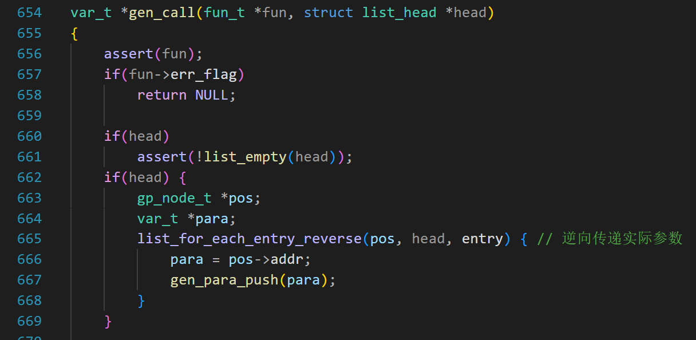
第 662 行，如果 head 不等于 NULL，说明有参数传递，第 665 行，逆向传递实际参数。list_for_each_entry_reverse 是一个宏，功能是逆向遍历链表。
第 667 行构造传递参数的中间指令。
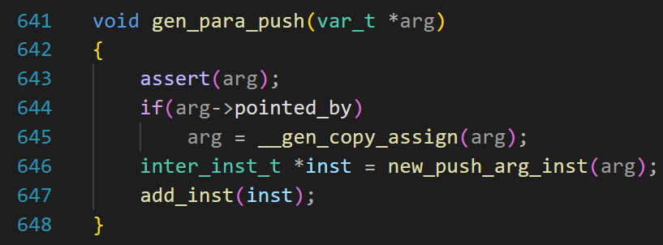
如果参数是 a 的形式，需要调用第 645 行的 gen_copy_assign，得到 tmp = a;
第 646 行，调用 new_push_arg_inst 函数，把参数入栈（后面生成汇编代码的时候会用 push 指令）。
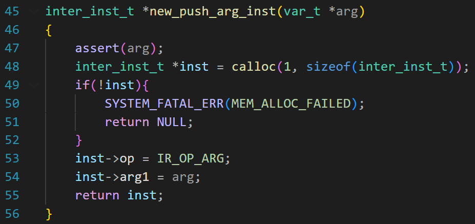
我们继续看 gen_call 函数
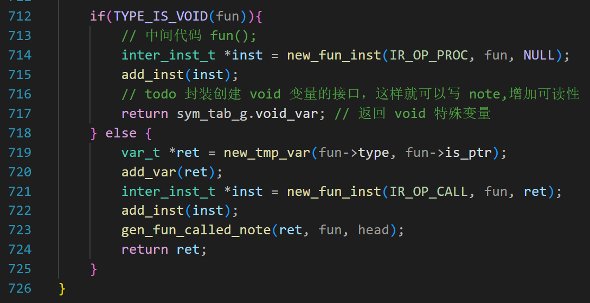
如果函数的返回类型是 void，则执行第 714 行，生成 PROC 中间指令，因为没有返回值，所以最后一个参数是 NULL
第 717 行，返回符号表中的一个特殊变量，表示函数的返回值是 void
如果函数有返回值，则第 719 行创建一个变量，其类型就是函数返回值的类型，是不是指针要看函数声明的时候带不带指针。
第 721 行生成 CALL 指令，后面生成机器的码的时候，会翻译成 x86 汇编的 call 指令。
局部变量初始化
生成中间代码的函数大部分都讲了。下面我们把注意力移到局部变量的初始化上。
首先，要明白初始化不是赋值语句。
1 | |
虽然第 3 行和第 5 行都有等号，但是不一样，前者是初始化，后者是赋值语句。
第 3 行，是被编译器当变量声明来解析的，“= 9”被解读成 a 的初始化值.
那我们生成中间代码的时候，如何处理第 3 行这类代码呢？
要分情况，如果是常量，那么可以不生成中间代码，仅用 IR_OP_DECL 声明变量就可以，当生成汇编代码的时候，检查每一个用 IR_OP_DECL 声明的变量，如果它有初始化值，就直接生成汇编指令，例如 mov …, 9
如果不是常量，例如第 6 行，虽然有初始化值，但是这个值是一个表达式，需要计算。那就需要生成中间代码。
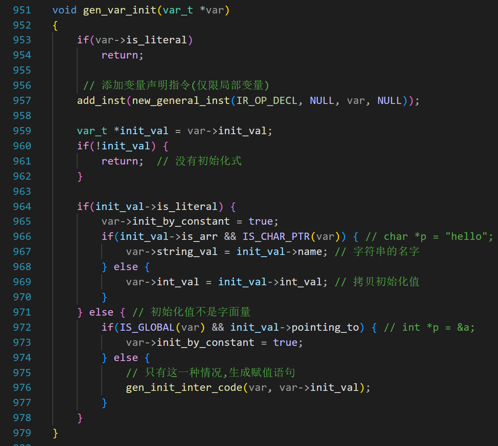
当调用 add_var 把局部变量加入符号表的时候，add_var 调用 def_var， def_var 调用上面的 gen_var_init；
gen_var_init 函数的作用是为局部变量（不包括数组）生成初始化语句。
第 957 行生成 DECL 中间指令，声明这个局部变量。
第 960 行判断它是否有初始化式，没有则返回，因为不需要初始化。
我们生成的各种临时变量，都没有初始化式，在这里就返回了。
第 964 行，如果是用常量初始化，则标记 init_by_constant 字段为 true;
第 966 行判断初始值是不是数组，如果是数组且被初始化的变量是字符指针，则需要把字符串的名字保存到 var->string_val 字段中。（为什么这么做，后面就明白了）
如果不是 966 的情况，就把 init_val->int_val 赋值给 var->int_val
第 971 行，如果初始化值不是字面量，则分为两种情况，一个是全局变量，一个是局部变量。
如果是全局变量，它一定是用某个地址初始化的，不然前面就会报错。也标记 init_by_constant 字段为 true;
对于 964~973 的代码，现在不理解也没有关系。
如果是局部变量，则调用 gen_init_inter_code 生成赋值语句来完成初始化。
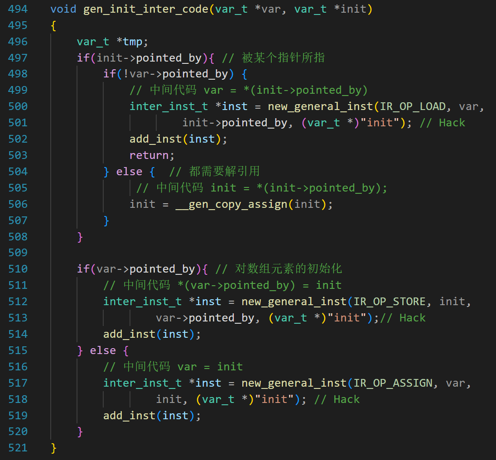
有人问为什么不调用 gen_assign 函数呢？
其实可以，但是 gen_assign 里面有的东西对初始化来说不需要，例如消除左值属性。
上面的代码和 gen_assign 很像，只是把 gen_assign 前面的类型检查和消除左值属性的代码去掉了。
另外，增加了 “Hack” 部分，因为 IR_OP_LOAD、IR_OP_STORE 和 IR_OP_ASSIGN 操作都用不上最后一个参数，所以这里把字符串 “init”传递给 inst->arg2，
在打印中间代码的时候，判断上面 3 个操作的 inst->arg2 参数，如果不为空，就标记出来，告诉我们这不是赋值，是初始化。
如果局部变量是数组，我们有专门的初始化函数。
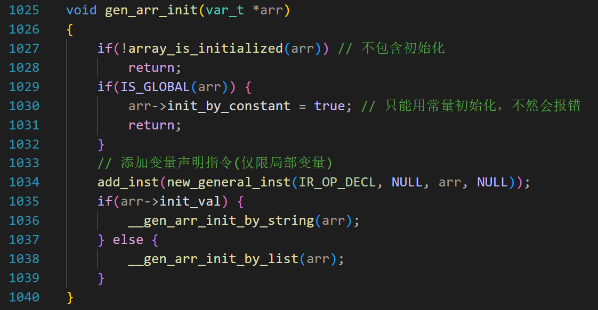
数组初始化有两种情况，一是类似于char arr[] = "hello";
这样的话 init_val 就不是空，执行第 1036 行的 __gen_arr_init_by_string
二是类似于 int a[3] = {1, 2, 3};
这种情况执行第 1038 行的 __gen_arr_init_by_list
__gen_arr_init_by_string 和 __gen_arr_init_by_list 就不具体讲了，留给读者分析。
成果展示
初始化
测试源码：
1 | |
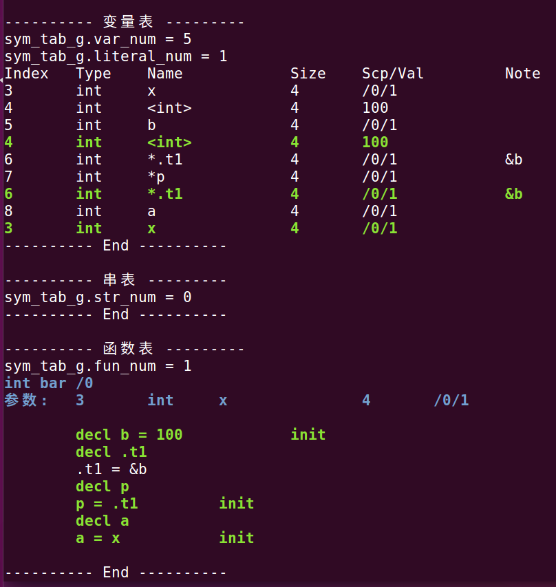
函数表蓝色的是函数名、作用域、参数。
参数里面有个 3，这个 3 表示变量表里面 index = 3 的符号。类型是 int，名字是 x, 大小是 4 字节，作用域是 /0/1
参数下面就是这个函数的中间代码。
decl b = 100 表示声明了变量 b, 初始化值是 100（后面标注了 init，说明是初始化）
然后声明了中间变量 .t1
接下来是 .t1 = &b 这是取地址操作，是对第 4 行代码 &b 翻译的结果
接下来声明了变量 p, 对应代码第 4 行的 int *p
然后是初始化的操作， p = .t1（后面标注了 init，说明是初始化）
最后声明了变量 a, 初始化为 x
同时，变量表里面的绿色部分也体现出作为初始化的变量。当一个变量有初始化值的时候，打印完此变量，紧接着会打印初始化值。
前自增
测试源码
1 | |
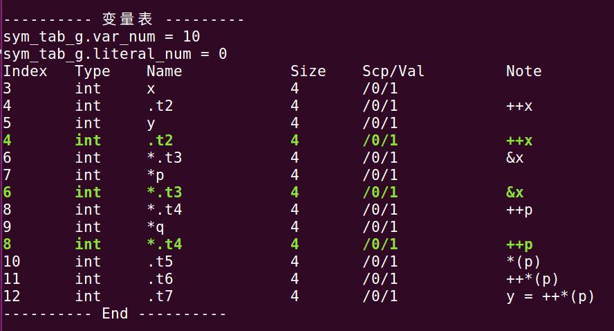
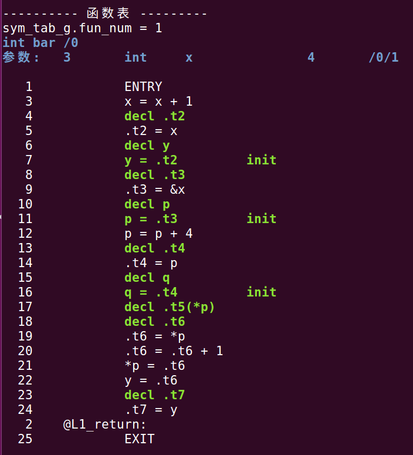
解释一下：
1：标记函数入口（下节课讲）
3~7，完成 int y = ++x;
9：对 x 取地址，把结果给 .t3
11: p = .t3 ；完成 p 的初始化
12： 完成 ++p
14: 把 p 赋值给 .t4，这是因为 ++p 的结果不是左值；
16：完成 q 的初始化
17： 对 p 解引用，生成 .t5
19: 求 *p 的值，结果在 .t6
20~21,完成 ++*p
22: 把结果赋值给 y
24: 赋值表达式的结果不是左值。不过这里没有用到 .t7（后面会做中间代码优化，希望把这句优化掉）
2、25: 生成函数返回点和出口（下节课讲）
后自减
测试源码
1 | |
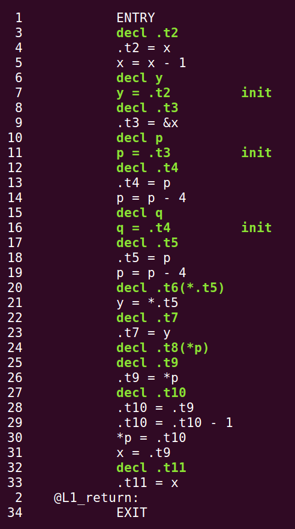
4： 因为是后缀递减，所以先保存 x 的原值
5：修改 x 的值，减去 1
7：完成 y 的初始化，y 的值是 x 的原值
9：对 x 取地址，把结果给 .t3
11: p = .t3 ；完成 p 的初始化
13~14:完成 p 的后缀递减，并且保存了 p 的原值（在 .t4 里面）
16： 完成 q 的初始化
代码 “y = *p—;”
后缀表达式的优先级高，所以先求 p-- ， 再解引用
18~19 :完成 p-- ， p 的原值保存在 .t5
20~21：对 .t5 解引用
24~26 求 *p，结果在 .t9 中
(p)—; 此表达式的值是 p, 它的副作用是让 *p 的值减去1
28~30：完成副作用
31： x 的值应该是 .t9
连续取地址解引用
测试源码
1 | |
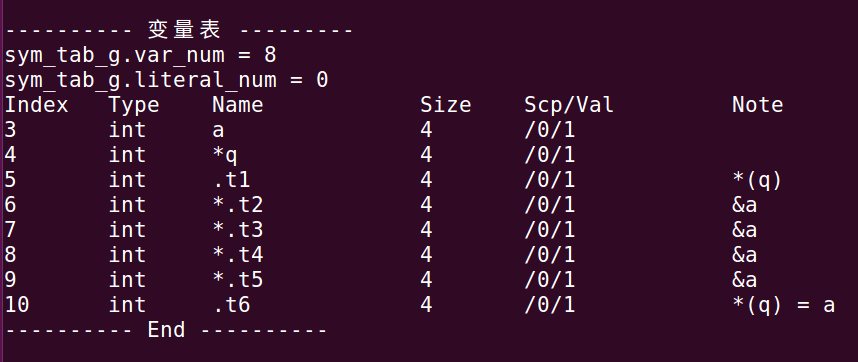
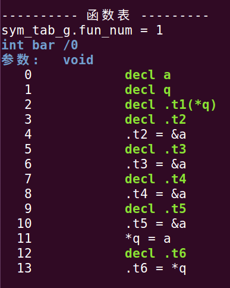
为了便于叙述，指令左边有编号。
0~1 声明了变量 a 和 q
2: 声明 .t1 = *q
然后求一元表达式*&*&*&*&a;
3~4:声明 .t2 = &a 这是第一次对 a 取地址
然后求解*&a, 因为 *和& 相抵消，所以结果还是 a, 这一步没有生成新的变量
下面求解 .t3 = &*&a， 因为 *&a 的结果是 a, 所以 .t3 = &a
然后求解*&*&a,因为 *和& 相抵消，所以结果还是 a,这一步没有生成新的变量
接下来求解 .t4 = &*&*&a， 因为 *&*&a 的结果是 a, 所以 .t4 = &a
再求解*&*&*&a,因为 *和& 相抵消，所以结果还是 a,这一步没有生成新的变量
再求解 .t5 = &*&*&*&a， 因为 *&*&*&a 的结果是 a, 所以 .t5 = &a
最后求解*&*&*&*&a; 因为 *和& 相抵消，所以结果还是 a,这一步没有生成新的变量
接下来执行指令 11， *q = a
最后是 12~13, 声明 .t6 = q; 这一步是为了获得 q 的副本，因为赋值表达式的结果不是左值。
本文到这里就结束了。中间代码生成还没有完，后面会讲如何生成 if 语句、if-else 语句、while 语句…的中间代码。